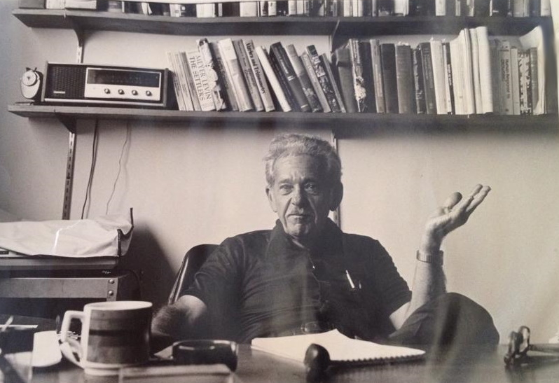
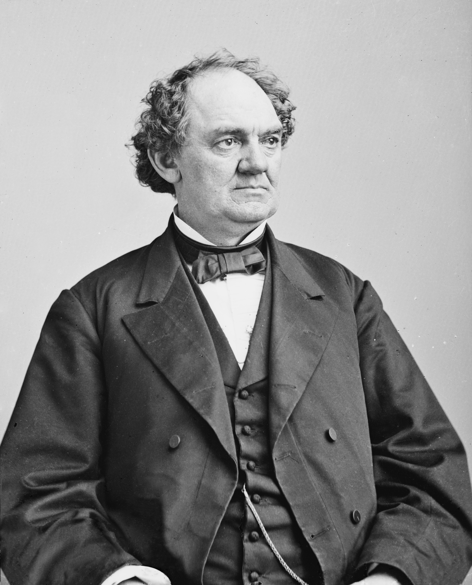

Historia
Origen del termino
El nombre viene del showman P. T. Barnum, famoso por sus espectaculos que apelaban a lo maravilloso y a la credulidad.
En 1948, el psicologo Bertram Forer demostro el fenomeno entregando a sus alumnos el mismo perfil psicologico. La mayoria lo considero sorprendentemente exacto, a pesar de que todos recibieron el mismo texto.


Preguntas rapidas
¿Por que se vincula el nombre a Barnum?
Porque su estilo de espectaculo jugaba con la credulidad y las promesas generales, un paralelo con descripciones vagas que parecen personales.
Fuentes y exactitud
Contenido educativo resumido. Para precision academica, consulta fuentes primarias.